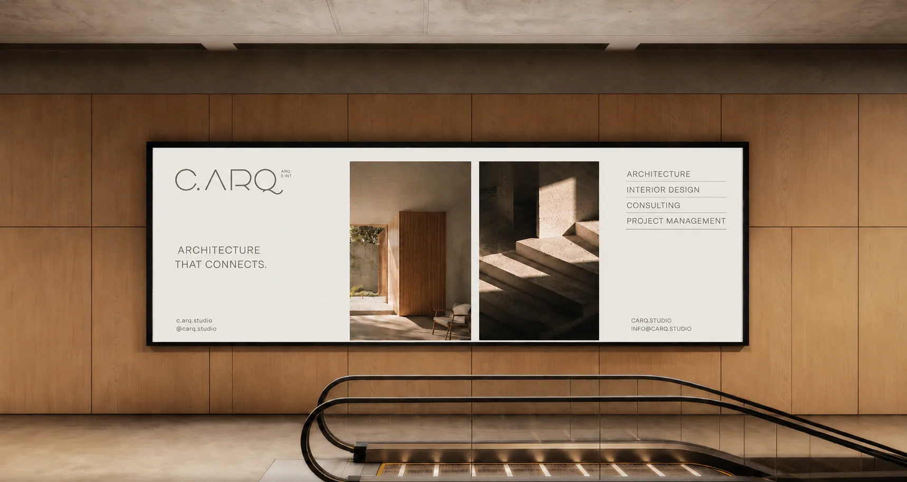
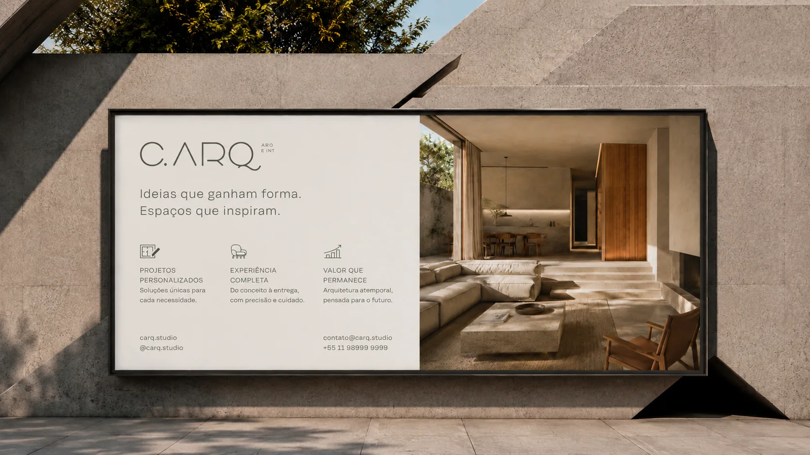

C.ARQ
Construção de identidade visual para um estúdio de arquitetura orientado por bem-estar, sofisticação e conexão humana.
Acreditamos que arquitetura vai muito além da estética. A C.ARQ nasce para criar espaços com significado, que acolhem, conectam e transformam a forma como as pessoas vivem e sentem cada ambiente.
A C.ARQ nasceu com uma visão que vai além da arquitetura tradicional. O desafio era construir uma marca capaz de comunicar sensibilidade, bem-estar e sofisticação sem abrir mão da credibilidade técnica.
Em um mercado frequentemente guiado pela estética, era necessário posicionar a marca em um território mais profundo: o da arquitetura como experiência humana, capaz de impactar a forma como as pessoas vivem, sentem e se conectam com os espaços ao seu redor.

Arquitetura que conecta.
A estratégia foi construída a partir da compreensão de que ambientes não são apenas espaços físicos. Eles influenciam comportamentos, emoções e qualidade de vida.
O conceito central da marca nasce da união entre técnica, sensibilidade e significado, traduzindo a arquitetura como uma ferramenta de conexão entre pessoas, histórias e experiências.
Mais do que projetar ambientes, a C.ARQ projeta sensações.

Desenvolvemos um sistema de marca autoral capaz de traduzir visualmente a essência da C.ARQ.
A identidade combina minimalismo, sofisticação e equilíbrio, criando uma presença elegante e atemporal. Cada elemento foi pensado para reforçar os pilares da marca: bem-estar, acolhimento, personalização e excelência nos detalhes.
O resultado é uma marca que comunica não apenas arquitetura, mas uma forma mais humana e consciente de habitar os espaços.

A nova identidade posiciona a C.ARQ de forma mais clara e diferenciada dentro do mercado de arquitetura e interiores.
A marca passa a transmitir autoridade, exclusividade e sensibilidade em todos os pontos de contato, fortalecendo sua percepção de valor e sua capacidade de atrair clientes alinhados à sua proposta.
Uma marca construída para representar espaços com significado e experiências que permanecem.